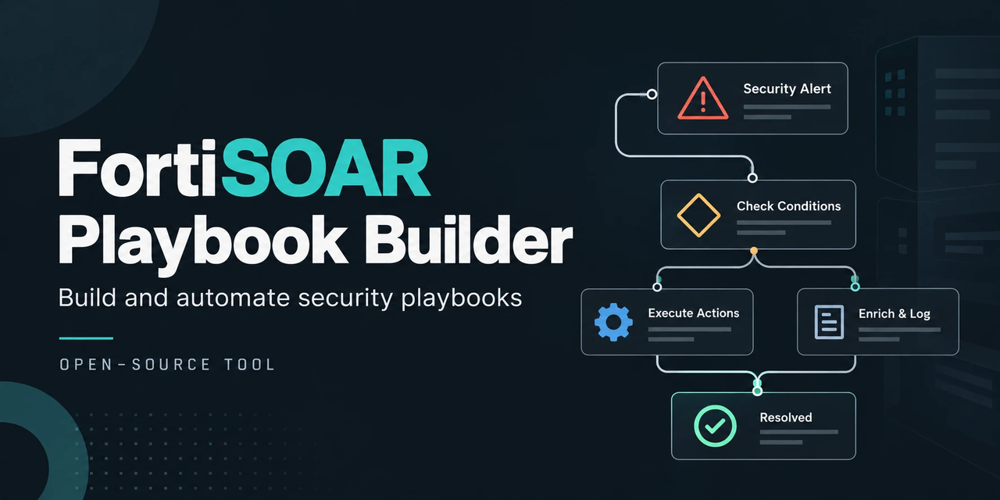

FortiSOAR Playbook Builder
A free, open-source Claude AI skill that builds, modifies, validates and reviews FortiSOAR playbooks as complete, importable JSON exports.

What it does
Describe the playbook you want in plain English. Claude writes the FortiSOAR export, and a bundled static validator checks it before you import it. Every rule in the skill comes from a real failure on a FortiSOAR appliance.
- Alert triage and incident response playbooks
- IOC enrichment (IPs, domains, hashes, URLs) and phishing analysis
- Threat hunting with FortiSIEM and FortiAnalyzer queries
- Response actions such as block and isolate, with client approval links
- PDF and HTML reports generated inside FortiSOAR
- Reviewing, debugging and adapting existing playbook exports for another client or tenant
Example prompt
Build a FortiSOAR playbook that runs on alert create, enriches every IP with FortiGuard and VirusTotal, and closes the alert as false positive if all are clean.
Install in Claude Code
/plugin marketplace add git-Jimit/fortisoar-playbook-builder
/plugin install fortisoar-playbook-builder@fortisoar-skillsOn Claude.ai or the Claude desktop app, zip the skills/fortisoar-playbook-builder folder from the repository and upload it under Customize → Skills. Full steps are in the README.
Validate any playbook export
python3 skills/fortisoar-playbook-builder/scripts/validate_playbook.py my_playbook.jsonThe scripts only read the file you pass them. They make no network calls and collect no data. See the privacy policy.